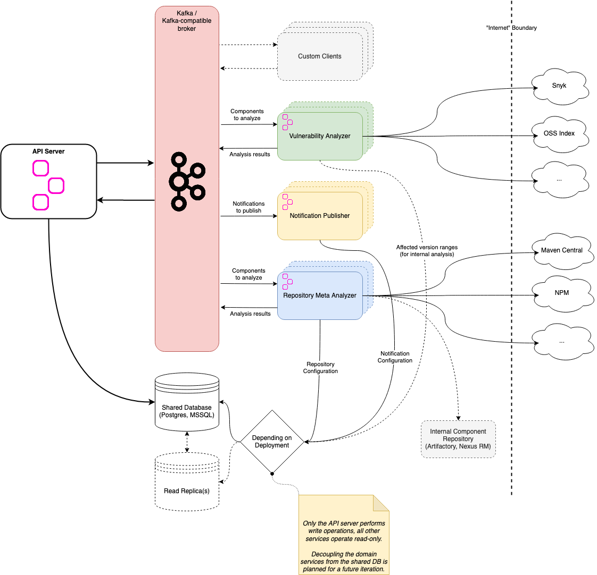

Hyades

What is this? 🤔
Hyades, named after the star cluster closest to earth, decouples responsibilities from Dependency-Track's monolithic API server into separate, scalable™ services. We're using Kafka (or Kafka-compatible brokers like Redpanda) for communicating between API server and Hyades services.
If you're interested in the technical background of this project, please refer to 👉 WTF.md 👈.
As of now, Hyades is capable of:
- Performing vulnerability analysis using scanners that leverage:
- Dependency-Track's internal vulnerability database
- OSS Index
- Snyk
- Gathering component metadata (e.g. latest available version) from remote repositories
- Sending notifications via all channels supported by the original API server (E-Mail, Webhook, etc.)
Here's a rough overview of the architecture:

To read more about the individual services, refer to their respective REAMDE.md:
Great, can I try it? 🙌
Yes! We prepared demo setup that you can use to play around with Hyades.
Check out 👉 DEMO.md 👈 for details!
Technical Documentation 💻
Configuration 📝
See CONFIGURATION.md.
Development
Prerequisites
- JDK 17+
- Docker
Building
Running locally
Running the Hyades services locally requires both a Kafka broker and a database server to be present. Containers for Redpanda and PostgreSQL can be launched using Docker Compose:
To launch individual services execute the quarkus:dev Maven goal for the respective module:
Make sure you've built the project at least once, otherwise the above command will fail.
Note
If you're unfamiliar with Quarkus' Dev Mode, you can read more about it here
Testing 🤞
Unit Testing 🕵️♂️
To execute the unit tests for all Hyades modules:
End-To-End Testing 🧟
Note
End-to-end tests are based on container images. The tags of those images are currently hardcoded. For the Hyades services, the tags are set tolatest. If you want to test local changes, you'll have to first: * Build container images locally * Update the tags inAbstractE2ET
To execute end-to-end tests as part of the build:
To execute only the end-to-end tests:
Load Testing 🚀
See load-tests.
Deployment 🚢
The recommended way to deploy Hyades is via Helm. Our chart is not officially published to any repository yet, so for now you'll have to clone this repository to access it.
The chart does not include:
- a database
- a Kafka-compatible broker
- the API server
- the frontend
While API server and frontend will eventually be included, database and Kafka broker will not.
Helm charts to deploy Kafka brokers to Kubernetes are provided by both Strimzi and Redpanda.
Minikube
Deploying to a local Minikube cluster is a great way to get started.
Note
For now, services not included in the Helm chart are deployed using Docker Compose.
- Start PostgreSQL and Redpanda via Docker Compose
- Start the API server and frontend
- Start a local Minikube cluster
- Deploy Hyades
Monitoring 📊
Metrics
A basic metrics monitoring stack is provided, consisting of Prometheus and Grafana.
To start both services, run:
The services will be available locally at the following locations:
- Prometheus: http://localhost:9090
- Grafana: http://localhost:3000
Prometheus is configured to scrape metrics from the following services in a 5s intervals:
- Redpanda Broker
- API Server
- Notification Publisher
- Repository Meta Analyzer
- Vulnerability Analyzer
The Grafana instance will be automatically provisioned to use Prometheus as data source. Additionally, dashboards for the following services are automatically set up:
- Redpanda Broker
- API Server
- Vulnerability Analyzer
Redpanda Console 🐼
The provided docker-compose.yml includes an instance of Redpanda Console
to aid with gaining insight into what's happening in the message broker. Among many other things, it can be used to
inspect messages inside any given topic.

The console is exposed at http://127.0.0.1:28080 and does not require authentication. It's intended for local use only.